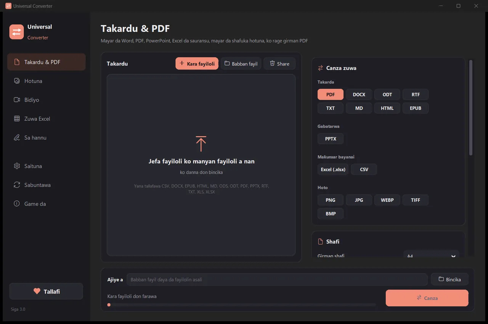
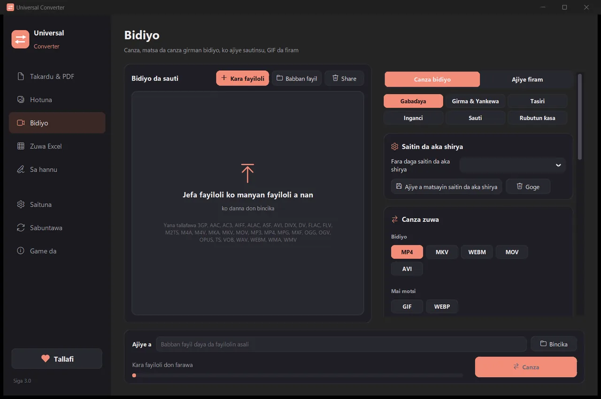
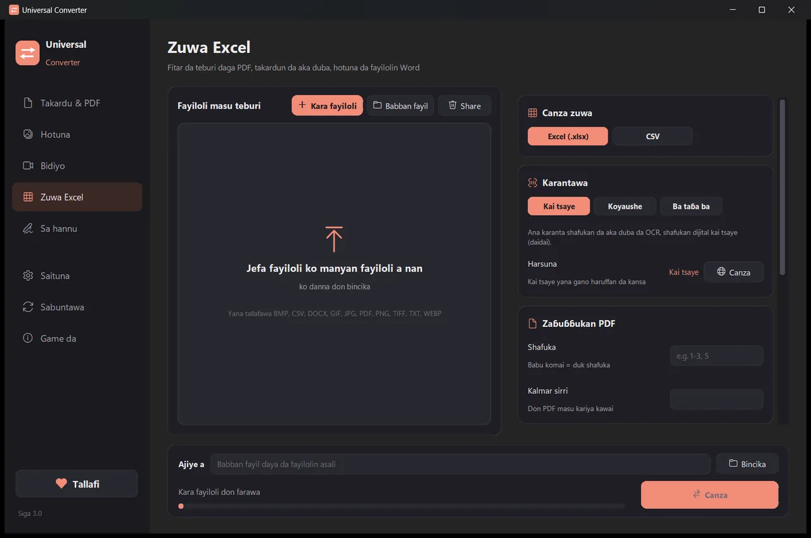

Canza fayilolinka a na'urarka
Hotuna, takardu, bidiyo da sauti, PDF da teburi zuwa Excel, duka a manhaja ɗaya. Ba a loda komai ba: fayilolinka ba sa taɓa barin na'urarka.
Yadda ake shigarwa da sabuntawa
- Buɗe .dmg da ka sauke kuma ka ja Universal Converter zuwa Applications.
- Buɗe manhajar. A karon farko macOS zai toshe ta saboda Apple bai sa mata hannu ba: danna Done.
- Buɗe System Settings > Privacy & Security, gungura ƙasa, danna Open Anyway kuma ka shigar da kalmar sirrinka. Sau ɗaya kawai za ka yi haka.
Sabuntawa: idan ka ba da izini lokacin da manhajar ta fara buɗewa, tana duba sababbin siga duk lokacin da ta fara, tana tabbatar da sa hannunsu na dijital kuma tana shigar da su lokacin da ka zaɓa.
Yadda ake shigarwa da sabuntawa
- Danna “Sauke don Android” a wayarka.
- Buɗe fayil ɗin da aka sauke. Idan Android ta tambaya, ba wa burauzarka ko mai sarrafa fayil izinin shigar da manhajoji.
- Danna Install.
Sabuntawa: manhajar tana dubawa kusan sau ɗaya a rana kuma tana gaya maka idan sabuwar siga ta shirya. Sauke ta haka nan kuma ka shigar da ita a kan tsohuwar; ana kiyaye saitunanka.

Na sirri
Komai yana gudana a na'urarka. Babu lodawa, babu jira a layi, babu iyakar girma.
Kyauta
Kyauta don amfani, babu talla, babu asusu kuma babu alamar ruwa.
Harsuna 18
Hausa, English, Girkanci, Spanish, Italian, German, French, Portuguese, Polish, Rashanci, Larabci, Ibrananci, Sinanci, Japananci, Koriyanci, Tamil, Afrikaans da Yarbanci.
Kayan aiki biyar a taga ɗaya

Takardu & PDF
Canzawa tsakanin PDF, Word, ODT, RTF, TXT, Markdown, HTML, EPUB, PowerPoint da Excel. Mayar da shafuka zuwa hotuna kuma ka haɗa fayiloli da yawa zuwa PDF ɗaya. Ana kiyaye haruffan rubutu, girma da launuka. Rage girman PDF zuwa girman da ka zaɓa.
Hotuna
Canzawa tsakanin JPG, PNG, WEBP, TIFF, BMP, GIF da ICO. Canza girma ta pixel, kashi ko girman fayil, haɗa hotuna zuwa fayil ɗin PDF ko Word, kuma karanta rubutun da ke cikin hotuna (OCR). Ana iya ƙara PDF ma: kowane shafi zai zama hoto.

Bidiyo
Canza bidiyo tsakanin MP4, MKV, WebM, MOV da AVI, kuma ka matse su da AV1, H.265, H.264 ko VP9. Gajarta, yanke, juya da canza girma, yi GIF, ajiye firam a matsayin hotuna, ko ka riƙe sauti kawai a matsayin MP3, M4A, FLAC, WAV, OGG ko Opus. A Android: MP4 ko MKV da H.264 ko H.265; gajarta, yanke, juya, canza girma, ajiye firam, ko riƙe sauti a matsayin M4A.

Zuwa Excel
Fitar da teburi daga PDF, takardun da aka duba da hotuna zuwa Excel ko CSV: bayanan banki, takardun kuɗi, jerin farashi. Yana karanta Hausa, English, Girkanci da sauran harsuna fiye da 30.

Sa hannu
Sa hannu a kan PDF kuma cike fom. Rubuta sunanka a salon rubutun hannu, zana sa hannunka ko yi amfani da hotonsa. Manhajar tana nemo layukan sa hannu da kanta, ko ka danna inda sa hannu, baƙaƙe, kwanan wata, rubutu ko alamomi za su tafi. Sa hannu a fayiloli da yawa lokaci ɗaya; na asali ba sa canzawa.
- Yana amfani da katin zanenka don bidiyo idan zai iya: yawanci ya fi sauri sau 5 zuwa 20.
- Ja dukan manyan fayiloli ciki: ana canza kowane fayil a lokaci ɗaya.
- Yana gaya maka idan fayil na wani shafi ne, kuma yana kai shi can da danna ɗaya.
- Yana gaya maka game da sababbin siga; a Windows da Mac zai iya shigar maka da su, bayan an tabbatar da su ta hanyar dijital.
- Kamanni mai haske da mai duhu, don dacewa da na'urarka.
Yadda yake aiki
- Buɗe Universal Converter kuma ka zaɓi Takardu & PDF · Hotuna · Bidiyo · Zuwa Excel · Sa hannu a hagu.
- Ja fayilolinka ko dukan babban fayil cikin taga, ko danna “Ƙara fayiloli”.
- Danna “Canza”. Ana ajiye sababbin fayiloli kusa da na asali, ko a babban fayil ɗin da ka zaɓa.
Abin da zai iya yi
- Canza PDF zuwa Word
- Canza takardun Word zuwa PDF
- Haɗa fayiloli da yawa zuwa PDF ɗaya
- Matse PDF zuwa girman da ka zaɓa
- Canza shafukan PDF zuwa hotunan JPG
- Mayar da takardar da aka duba zuwa fayil ɗin Word da za a iya gyarawa
- Canza hotuna tsakanin JPG, PNG, WEBP da ƙari
- Canza girman hotuna ko rage su zuwa girman fayil
- Haɗa hotuna zuwa PDF ɗaya
- Kwafi rubutu daga hoto (OCR)
- Matse bidiyo ba tare da loda shi ba
- Canza bidiyo tsakanin MP4, MKV, WebM, MOV da AVI
- Ajiye sautin bidiyo a matsayin MP3
- Yi GIF daga bidiyo
- Fitar da teburi daga PDF zuwa Excel
- Canza PDF na bayanan banki zuwa Excel
- Fitar da teburi daga takardun kuɗi na PDF zuwa Excel
- Sa hannu a kan PDF
- Cike fom na PDF
Tambayoyi
Da gaske kyauta ne?
Ee. Universal Converter kyauta ne don amfani, babu talla, babu asusu kuma babu iyakar lokaci. Idan yana taimaka maka, za ka iya tallafa wa ci gabansa da gudummawa ta son rai, amma ba dole ba ne ko kaɗan.
Ana loda fayilolina zuwa wani wuri?
A'a. Kowane canji yana faruwa a na'urarka, don haka yana aiki ko da babu intanet. Manhajar tana shiga intanet ne kawai don duba sabuntawa, don sauke ƙarin harsunan da ka zaɓa kuma, idan ka ba da izini, don aika rahoton kurakurai ba tare da suna ba.
Windows tana nuna gargaɗin SmartScreen. Shin wannan al'ada ce?
Ee. Ba a sa wa mai shigarwa hannu da takardar shaidar lamba ba tukuna, don haka Windows ba ta gane shi ba. Zaɓi "More info" sannan "Run anyway". Bayan haka manhajar kanta ce ke tabbatar da sabuntawa ta hanyar dijital. Ko ka shigar da shi daga Microsoft Store, wanda ba ya nuna gargaɗi.
Yaya zan buɗe shi a Mac?
Buɗe fayil ɗin da ka sauke kuma ka ja Universal Converter zuwa Applications. Apple bai sa wa manhajar hannu ba, don haka a karon farko da ka buɗe ta macOS zai toshe ta: danna Done, sannan ka buɗe System Settings > Privacy & Security, danna "Open Anyway" kuma ka shigar da kalmar sirrinka. Sau ɗaya kawai za ka yi haka.
Yaya zan shigar da shi a Android?
Sauke APK a wayarka, buɗe shi kuma ka ba da izinin shigarwa idan an tambaya (Android 10 ko sabuwa). English da Girkanci suna ciki; ana iya sauke sauran harsuna a Saitunan manhajar. Manhajar tana gaya maka idan akwai sabuwar siga.
Waɗanne harsuna yake magana?
Manhajar tana cikin Hausa, English, Girkanci, Spanish, Italian, German, French, Portuguese, Polish, Rashanci, Larabci, Ibrananci, Sinanci, Japananci, Koriyanci, Tamil, Afrikaans da Yarbanci. Kana zaɓa a cikin mai shigarwa, ko daga baya a Saituna.